Depth effects and spatial variation in a trawl survey
Source:vignettes/articles/sdmTMB-support.Rmd
sdmTMB-support.RmdA survey tow that catches no fish and a tow that catches a large biomass tell us different things about habitat. Does depth affect the chance of encountering Pacific cod, the density when cod are caught, or both? Can a depth curve explain the geographical patterns in these observations?
This article uses gratia to examine those questions after fitting a spatial model with sdmTMB. The smooth extraction and effect plots are new gratia methods for sdmTMB models. The diagnostics also use the spatial and temporal fields in the complete model. See Checking a fitted model for shared ideas about residuals, dependence and posterior predictive checks.
Data and a model for two parts of the survey response
We adapt the Pacific cod survey examples in sdmTMB’s introduction
and delta-model
article. The data are trawl tows in Queen Charlotte Sound, British
Columbia. Biomass density is measured in kg/km²; X and
Y are UTM coordinates in kilometres. We retain all survey
years and the spatial and year-specific fields. Our adaptations add a
separate mean for each survey year, use six basis functions for the
depth smooth, and use the introduction’s 10 km mesh cutoff.
You need the optional package sdmTMB >= 1.1.0; older fitted objects may lack the stored smooth information that gratia needs. mgcv supplies the smooth syntax. The example also uses dplyr, tidyr, ggplot2 and patchwork. Fitting and simulation cost more than plotting an ordinary GAM, so we use modest simulation counts.
library("sdmTMB")
library("mgcv")
library("gratia")
library("dplyr")
library("ggplot2")
library("patchwork")
set.seed(1401)
cod <- pcod
cod$year_f <- factor(cod$year)
cod |>
group_by(year) |>
summarise(tows = n(), proportion_zero = mean(density == 0),
mean_density = mean(density), .groups = "drop")
#> # A tibble: 9 × 4
#> year tows proportion_zero mean_density
#> <int> <int> <dbl> <dbl>
#> 1 2003 232 0.565 29.2
#> 2 2004 230 0.487 64.8
#> 3 2005 224 0.442 68.2
#> 4 2007 255 0.588 17.4
#> 5 2009 233 0.592 22.2
#> 6 2011 251 0.610 44.1
#> 7 2013 240 0.442 40.2
#> 8 2015 238 0.479 53.5
#> 9 2017 240 0.625 25.2The zero proportions and means vary between years. A mean calculated from the observed tows is also influenced by where those tows occurred; it is not an area-standardised biomass index.
ggplot(cod, aes(X, Y, colour = density)) +
geom_point(size = 0.8) +
facet_wrap(~year, ncol = 4) +
coord_equal() +
scale_colour_viridis_c(transform = "log1p", breaks = c(0, 10, 100, 1000, 5000)) +
labs(x = "Easting (km)", y = "Northing (km)",
colour = "Density (kg/km²)")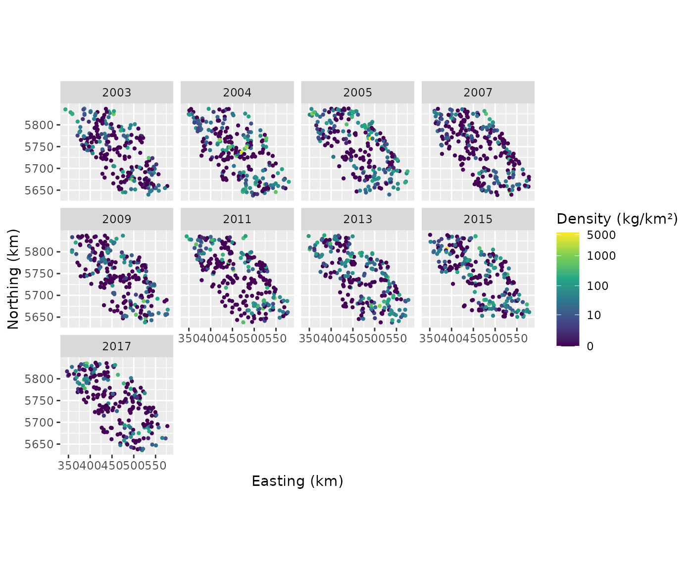
The colour scale uses log1p, the logarithm of one plus
density, to distinguish the many smaller catches while retaining zeros
and the largest catches. There are many exact zeros and a long positive
tail. A Gaussian response model would allow negative density and impose
constant response variance. A Tweedie model is one useful alternative
for zeros plus continuous positive values. Here a delta-Gamma
model makes the encounter and positive-density questions
explicit. Its first component models whether density is positive using a
logit link; its second models positive density using a Gamma
distribution and log link. Thus
Depth need not have the same effect on both components. Each has its own smooth coefficients and spatial fields. A persistent field represents geographical variation shared across survey years; an independent field for each survey year represents additional geographical variation in that year. These fields allow nearby tows to share unexplained variation. We choose independent year fields because this survey did not run every year. An AR1 model would require an explicit decision about missing time steps and assumptions about correlation between years.
cod_mesh <- make_mesh(cod, c("X", "Y"), cutoff = 10)
cod_fit <- sdmTMB(
density ~ year_f + s(depth, k = 6),
data = cod, mesh = cod_mesh, time = "year",
spatial = "on", spatiotemporal = "iid", family = delta_gamma()
)
sanity(cod_fit)The factor accounts for changes in average encounter probability and
positive catch density between surveys. It prevents the year-specific
fields from being the only way to represent a change in the overall
mean. Both components use the same formula and smooth basis, as required
by sdmTMB for delta models with smooths, but their fitted curves can
differ. Smoothing is estimated during fitting. sanity()
checks estimation and convergence. The fitted positive-density field has
a range of about 12 km, close to the 10 km mesh cutoff, so compare a
finer mesh before relying on its geographical predictions. The residual
checks below examine the response distribution and remaining spatial
patterns.
Which part of the response changes with depth?
smooths(cod_fit)
#> [1] "s(depth)" "s.1(depth)"s(depth) belongs to the encounter component and
s.1(depth) to the positive component. The .1
suffix identifies the second predictor.
depth_panels <- draw(cod_fit, select = smooths(cod_fit), n = 100,
wrap = FALSE)
(depth_panels[[1]] + labs(x = "Depth (m)", y = "Contribution to log odds")) |
(depth_panels[[2]] + labs(x = "Depth (m)", y = "Contribution to log density"))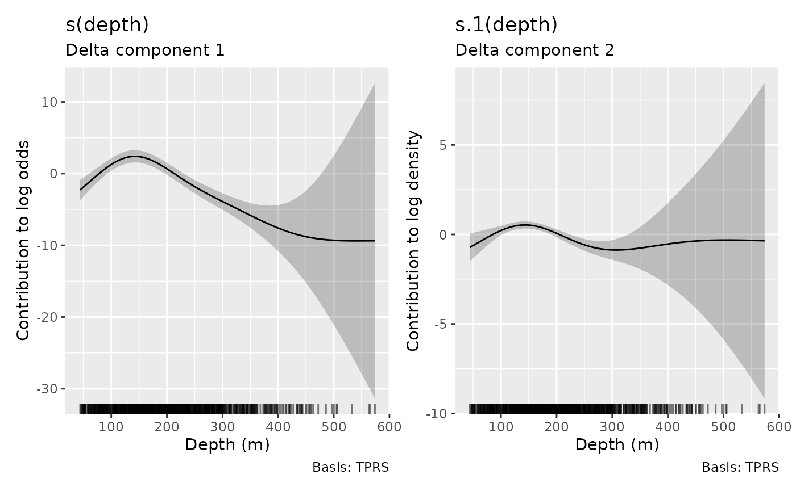
The first curve is a contribution to log odds of encounter, the second to log mean positive density. In this fit both curves peak near 140–150 m. The encounter curve falls especially sharply in deeper water. The positive component also favours intermediate depths, but its vertical scale and units differ; compare shapes within each panel rather than comparing heights across panels. Few observations support the deepest part of the fitted range, as the rugs show.
These are partial effects. They omit intercepts, survey-year effects
and spatial fields, so their heights are not encounter probabilities or
predicted densities. fun = exp would exponentiate a partial
effect, not create a full prediction. The bands use the joint fitted
covariance, retaining the effect of spatial modelling on coefficient
uncertainty. By default, smooth bands also include uncertainty in the
component’s overall mean. They are pointwise bands, not a simultaneous
claim about the entire curve. Use
overall_uncertainty = FALSE for uncertainty in the term
alone.
For your own plots or calculations, retain the estimates rather than extracting values from the figure:
depth_effects <- smooth_estimates(cod_fit, n = 100, interval = "confidence")
depth_effects |>
group_by(.smooth, .model) |>
slice_max(.estimate, n = 1) |>
select(.smooth, .model, depth, .estimate, .se)
#> # A tibble: 2 × 5
#> # Groups: .smooth, .model [2]
#> .smooth .model depth .estimate .se
#> <chr> <chr> <dbl> <dbl> <dbl>
#> 1 s(depth) Delta component 1 140. 2.41 0.435
#> 2 s.1(depth) Delta component 2 146. 0.529 0.102The reported peak depths locate the maxima on the 100-point evaluation grid. The broad intervals in deeper water reflect sparse observations there, so the intermediate-depth peak is better supported than the shape of the deep-water tail.
smooth_coefs() returns coefficients in the constrained
mgcv basis. They can be useful for reproducing a curve from its basis
matrix, but individual coefficients do not have the interpretation of a
linear depth slope:
smooth_coefs(cod_fit, select = "s(depth)")
#> s(depth).1 s(depth).2 s(depth).3 s(depth).4 s(depth).5
#> -4.4187762 2.5591291 1.0347497 -0.2311792 2.8689836How did survey years differ?
parametric_terms(cod_fit)
#> year_f year_f.1
#> "year_f" "year_f"
year_effects <- parametric_effects(cod_fit,
terms = c("year_f", "year_f.1"), overall_uncertainty = FALSE)
year_plot <- draw(year_effects)
year_plot[[1]] <- year_plot[[1]] +
labs(x = "Survey year", y = "Change in log odds", subtitle = "Encounter")
year_plot[[2]] <- year_plot[[2]] +
labs(x = "Survey year", y = "Change in log positive density",
subtitle = "Positive density")
year_plot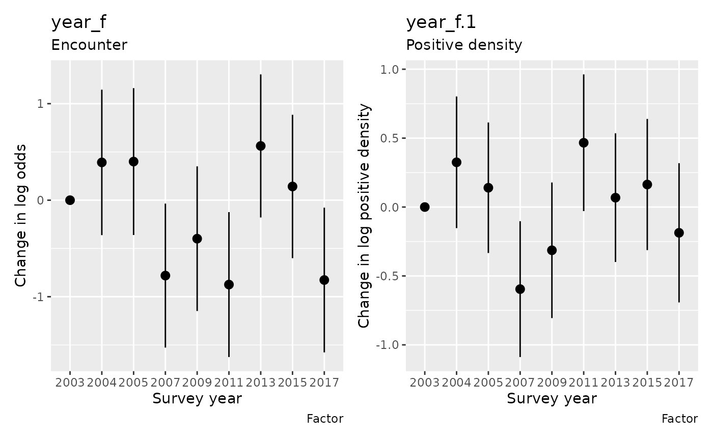
Under the fitted treatment contrasts, 2003 is the reference year and has a zero contribution. The other estimates are changes from that reference on their respective link scales, after accounting for depth and fields. For the positive-density component, exponentiating the contribution gives a ratio of conditional mean positive density relative to 2003. For the encounter component it gives an odds ratio, not a probability ratio. A difference in the positive component alone is not a change in total expected density: occurrence also matters. For example, the 2011 estimate is lower than 2003 for encounter but higher for positive density. Looking at either component alone would miss this distinction.
Here we requested term-only uncertainty. The reference year
consequently has no uncertainty interval for its contrast with
itself. Request the default overall_uncertainty = TRUE
to include intercept uncertainty in the plotted parametric
contributions. Use full predictions to estimate actual densities.
Did the association with depth change over survey years?
The delta model above gives each component a common depth curve and separate year means. A different question is whether the shape of the depth association changed through time. We now adapt the binomial encounter model in sdmTMB’s introduction: replace its quadratic depth effect with a joint smooth of depth and survey year, while retaining the spatial and independent year-specific fields and every survey tow. This extension focuses on encounter; the delta model remains the analysis for combined encounter and positive catch density.
A tensor
product smooth combines bases for the two covariates and estimates
smoothing for different parts of the surface separately. This is useful
when depth is measured in metres and time in years: there is no reason
to equate a metre of depth with a year of time. The t2()
basis has several penalties; gratia now retains all their fitted
coefficient blocks and joint uncertainty when extracting and plotting
sdmTMB effects.
cod$year_centered <- cod$year - 2011
cod_encounter <- sdmTMB(
present ~ t2(depth, year_centered, k = c(5, 4)),
data = cod, mesh = cod_mesh, time = "year", family = binomial(),
spatial = "on", spatiotemporal = "iid"
)
sanity(cod_encounter)The joint smooth allows a gradual relationship across actual elapsed
years. The year-specific fields still represent geographical departures
in each survey, with no correlation assumed between those fields. A
smooth temporal relationship in the mean and correlation between random
fields are different assumptions. Here the smooth includes both depth
and year main effects, so we do not add the previous year_f
factor. Centring year at 2011 only changes its coordinate origin.
In this example the optimizer converges and the Hessian is positive
definite, but sanity() flags large standard errors for
smoothing parameters. Inspect the estimated standard deviations
controlling the tensor penalties:
sdmTMB::tidy(cod_encounter, effects = "ran_pars") |>
filter(grepl("sd__", term)) |>
select(term, estimate, conf.low, conf.high)
#> # A tibble: 3 × 4
#> term estimate conf.low conf.high
#> <chr> <dbl> <dbl> <dbl>
#> 1 sd__t2(depth,year_centered)_1 0.0000311 0 Inf
#> 2 sd__t2(depth,year_centered)_2 0.00166 0 Inf
#> 3 sd__t2(depth,year_centered)_3 50.1 27.2 92.2Two standard deviations are close to zero and their intervals are uninformative. Some directions of curvature are being strongly penalised, and these data weakly identify the corresponding smoothing parameters. If changes in the depth relationship are secondary to the main survey question, the simpler common-depth-curve model above provides a useful starting point.
tensor_panel <- draw(cod_encounter, n_2d = 30, dist = 0.1,
wrap = FALSE)[[1]]
tensor_panel +
scale_y_continuous(breaks = c(-8, -4, 0, 4, 6),
labels = c(2003, 2007, 2011, 2015, 2017)) +
labs(x = "Depth (m)", y = "Survey year") +
guides(fill = guide_colourbar(title = "Log-odds\ncontribution"))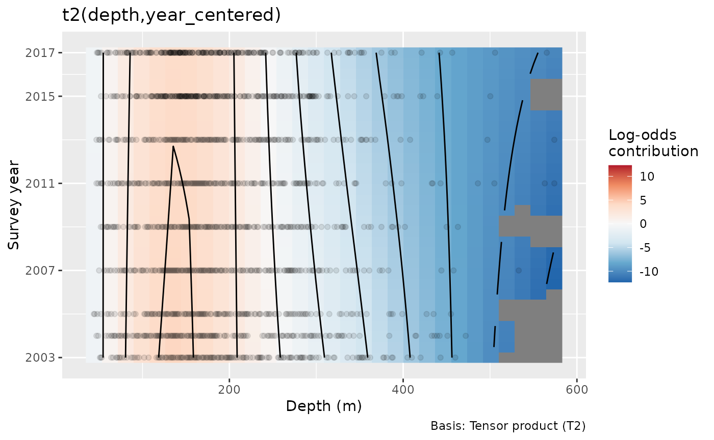
The mostly vertical contours indicate that depth dominates the
displayed association; the preferred intermediate-depth region changes
little through time. The surface is a contribution to log odds, without
the intercept or fields. Its colours show fitted contributions; standard
errors are available from smooth_estimates().
dist = 0.1 masks combinations far from the observed
depth-year pairs after scaling both covariates to a unit square. The
nearly stable intermediate-depth region is the main pattern here. The
smoothing warning and sparse deep-water observations limit the temporal
changes we can resolve in the tails.
For custom calculations, get_smooths_by_id() retrieves
the fitted mgcv smooth object. Its penalty list records the
independently smoothed parts of the surface; smooth_coefs()
retrieves the corresponding coefficient vector:
encounter_smooth <- get_smooths_by_id(cod_encounter, id = 1)[[1]]
length(encounter_smooth$S)
#> [1] 3
length(smooth_coefs(cod_encounter, select = smooths(cod_encounter)[1]))
#> [1] 19The three penalties control different parts of one fitted surface,
represented here by nineteen coefficients. Use
smooth_estimates(cod_encounter, data = ...) to evaluate
that surface and its standard errors at specific depth-year combinations
before carrying the results into another calculation.
Map expected density with full predictions
Full predictions require both components and the fields. Use sdmTMB’s public prediction method for this calculation. For a standard delta-Gamma model we can independently verify the response mean from the two link-scale predictors:
link_prediction <- predict(cod_fit)
response_prediction <- predict(cod_fit, type = "response")
combined_mean <- plogis(link_prediction$est1) * exp(link_prediction$est2)
max(abs(combined_mean - response_prediction$est))
#> [1] 1.136868e-13For other delta links, use the fitting package’s response transformation; this product of inverse links does not apply unchanged to a coupled Poisson-link delta model.
For mapping, use the supplied survey-area grid. Restricting the display to 2011 and 2017 keeps the figure readable; the fit still uses every survey year.
map_data <- replicate_df(qcs_grid, "year", c(2011L, 2017L))
map_data$year_f <- factor(map_data$year, levels = levels(cod$year_f))
cod_map <- predict(cod_fit, newdata = map_data, type = "response")
ggplot(cod_map, aes(X, Y, fill = est)) +
geom_raster() +
facet_wrap(~year) +
coord_equal() +
scale_fill_viridis_c(transform = "sqrt") +
labs(x = "Easting (km)", y = "Northing (km)",
fill = "Mean density\n(kg/km²)")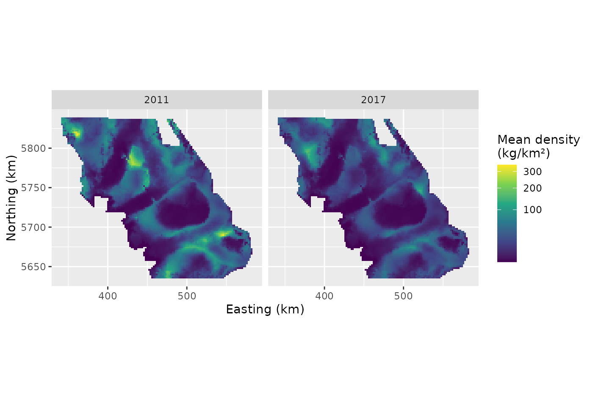
The map combines encounter probability, positive density and
geographical variation. A location can have low expected density through
either a low encounter probability or a low positive mean. The maps show
fitted mean surfaces. sdmTMB’s predict(..., nsim = ...)
supplies joint prediction draws for estimating uncertainty at each
location or in derived quantities. Setting re_form = NA
removes spatial fields from predictions. That is a prediction with zero
fields, not an average over new fields; the nonlinear links make these
different calculations.
What should be held fixed when checking the model?
The depth effects above omit fields from the displayed contribution, but residual checks must use the whole fitted predictor. The sdmTMB residual-checking article demonstrates why the choice of fields matters. gratia’s default follows its approach of drawing the fitted effects once from their approximate joint posterior, with fixed coefficients and covariance parameters held at their estimates. The observed residuals and reference responses use that same draw.
cod_field_options <- options(gratia.diagnostics.field_seed = 1402L)
qq_plot(cod_fit, type = "quantile", seed = 1404)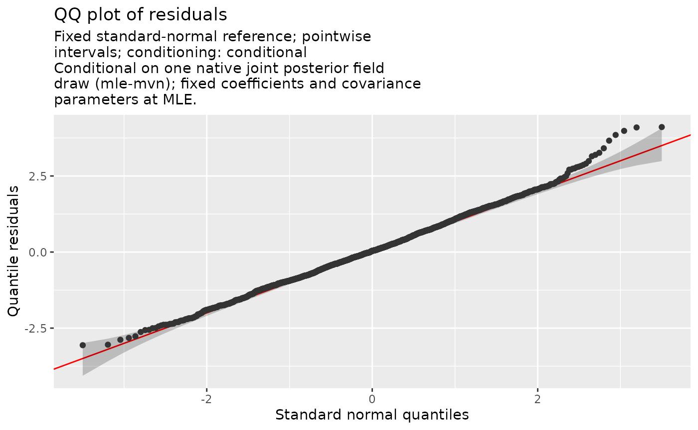
The PIT calculation randomises zeros over their fitted probability
mass, then transforms probabilities to normal scores for this QQ plot.
Given the selected fields, response errors are independent, so the
reference is standard normal and its bands condition on those fields. A
departure can indicate problems with the observation distribution or
predictor. It is not a calibrated test of the estimated field
covariance. Here, the upper tail rises above the reference: some
positive catches are larger than this fitted response distribution
anticipates. This motivates checking the positive component and
considering, for example, a delta-lognormal model, whose positive tail
differs from the Gamma distribution. Fit that alternative and repeat the
positive-tail checks to assess whether it represents the large catches
better. Repeat with other field_seed values to see whether
a feature of the plot depends on one fitted-field draw; the
seed argument separately controls randomisation at the
zeros.
Examine geographical patterns as well as the pooled residual distribution:
cod_residuals <- cod
cod_residuals$residual <- quantile_residuals(cod_fit,
type = "quantile", seed = 1404)
ggplot(cod_residuals, aes(X, Y, colour = residual)) +
geom_point(size = 0.8) +
facet_wrap(~year, ncol = 4) +
coord_equal() +
scale_colour_gradient2(low = "blue", mid = "white", high = "red") +
labs(x = "Easting (km)", y = "Northing (km)",
colour = "Quantile\nresidual")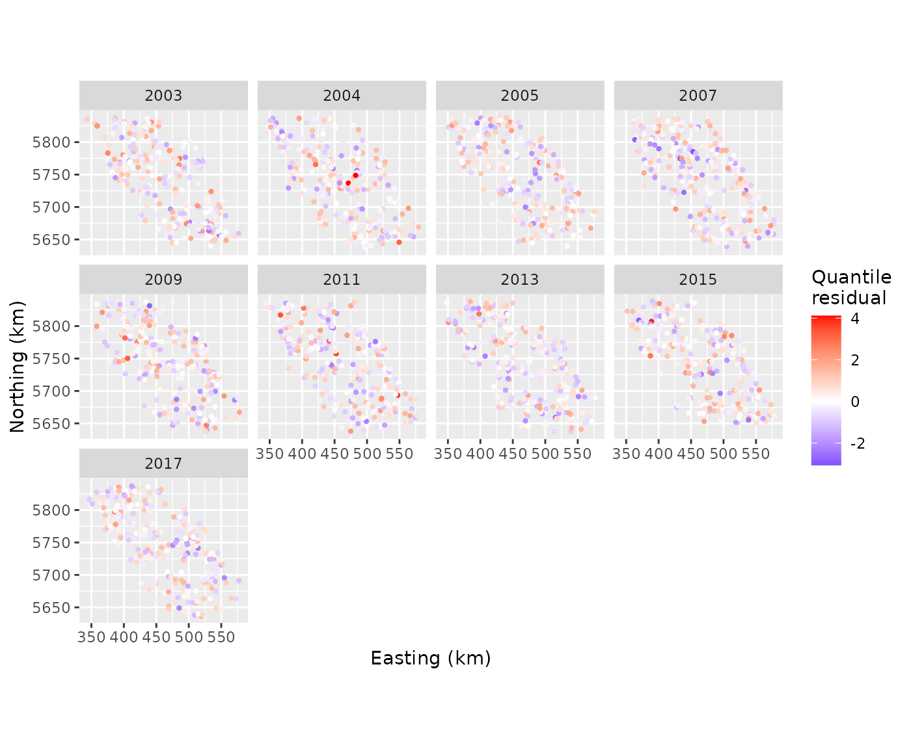
Clusters of residuals with the same sign deserve attention even if a QQ plot looks acceptable. Consider omitted spatial covariates, inadequate field resolution, or a response distribution that cannot represent the local variation. Use geographical distances to investigate these patterns: observation-order lags do not describe how far apart the survey tows are.
Three further choices answer different questions:
| Choice | What varies between reference data sets? | Useful interpretation |
|---|---|---|
field_method = "mle-eb" |
Response errors; estimated fields are fixed | Inspect errors at estimated fields, with shrinkage affecting calibration |
field_method = "mle-mvn-integrated" |
Response errors and approximate uncertainty in fitted effects | Check variation around the inferred fields, averaged across their uncertainty |
conditioning = "marginal" |
Response errors and new spatial and year fields from the fitted field distribution | Check the variation implied by new field realisations |
The default field_method = "mle-mvn" draws fitted
effects once and then fixes them; it is different from all three.
Empirical-Bayes (mle-eb) residuals can look too
concentrated because fields were estimated from these same responses.
sdmTMB does not recommend them for goodness-of-fit testing.
cod_reference_options <- options(gratia.diagnostics.marginal_draws = 49L,
gratia.diagnostics.marginal_seed = 1403L)
qq_plot(cod_fit, type = "quantile", field_method = "mle-eb", seed = 1404)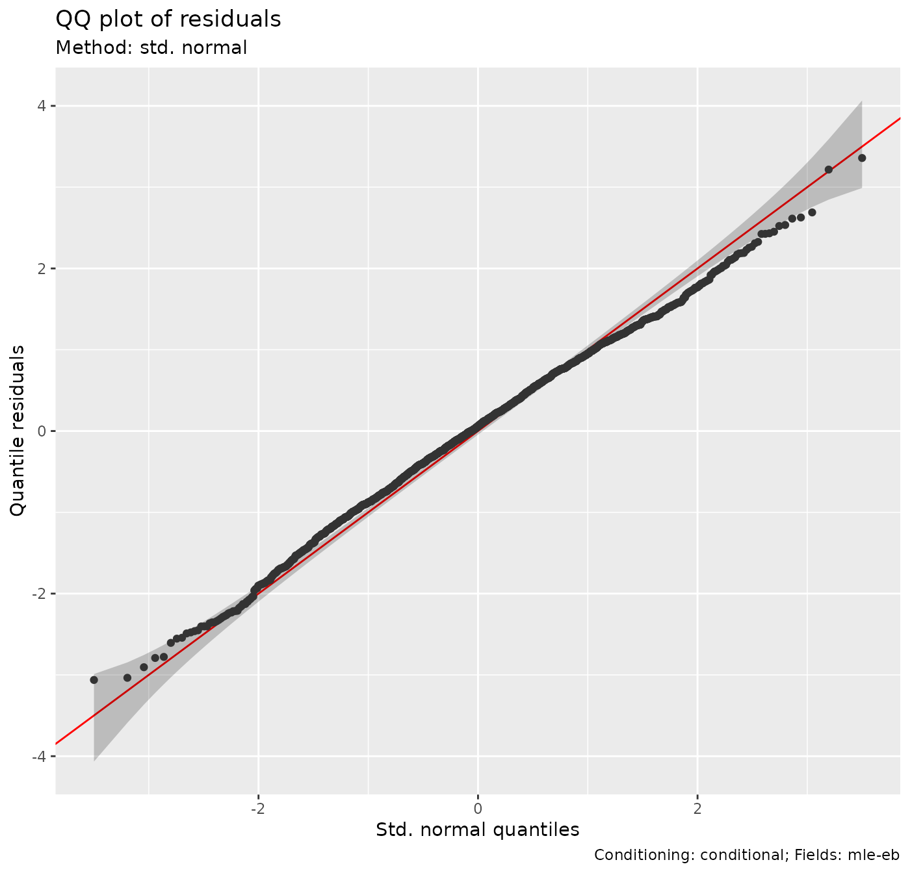
qq_plot(cod_fit, type = "quantile",
field_method = "mle-mvn-integrated", n_simulate = 49, seed = 1404)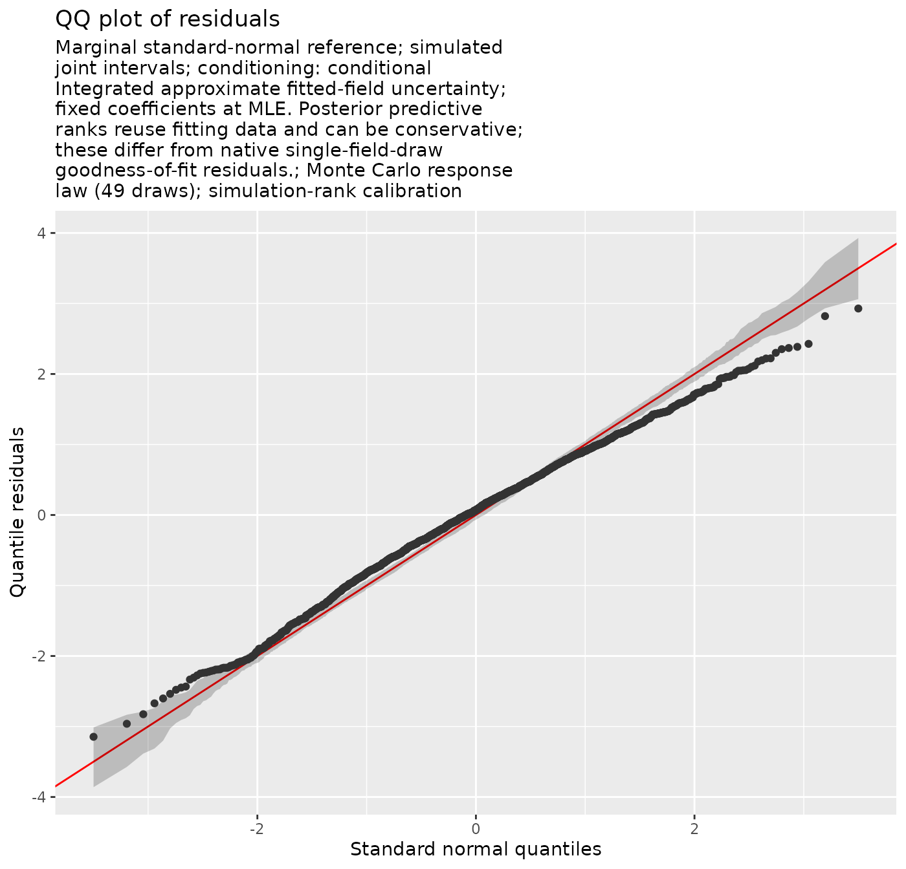
qq_plot(cod_fit, type = "quantile", conditioning = "marginal",
n_simulate = 49, seed = 1404)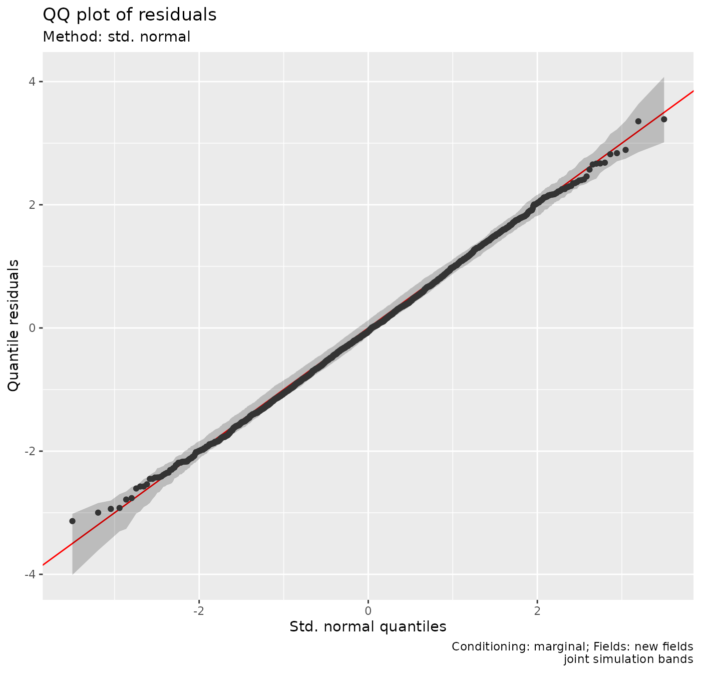
The integrated and marginal calculations use ranks in joint response
simulations. The former includes approximate uncertainty in fitted
latent effects (including penalised smooth coefficients), while holding
fixed coefficients and covariance parameters at their estimates. The
latter simulates new native spatial and temporal effects, retaining
fitted smooths. Changing field_method does not add another
fitted-field draw to a marginal check. These responses share field
contributions, so gratia generates the reference bands from complete
simulated data sets that preserve dependence. Independent uniform
order-statistic bands would answer the wrong question.
Compare the subtitles as well as the curves: each plot identifies its
conditioning. In this example the integrated QQ plot describes errors
around estimated survey fields, whereas the marginal plot also reflects
the wide variation in density between possible geographical surfaces.
The integrated plot has narrower residual spread. Because integration
reuses the fitting data, apparent agreement in that plot can be
conservative. With 49 reference draws, tail resolution and Monte Carlo
accuracy are limited. Increase
gratia.diagnostics.marginal_draws and
n_simulate to check that a conclusion persists; the
defaults use more reference draws.
Is a problem in occurrence or in positive density?
Component checks help locate a mismatch hidden in a full-response check. For the positive component, only observed positive tows are retained; the binomial component retains the complete presence/absence sample.
qq_plot(cod_fit, type = "quantile", component = "positive", seed = 1404)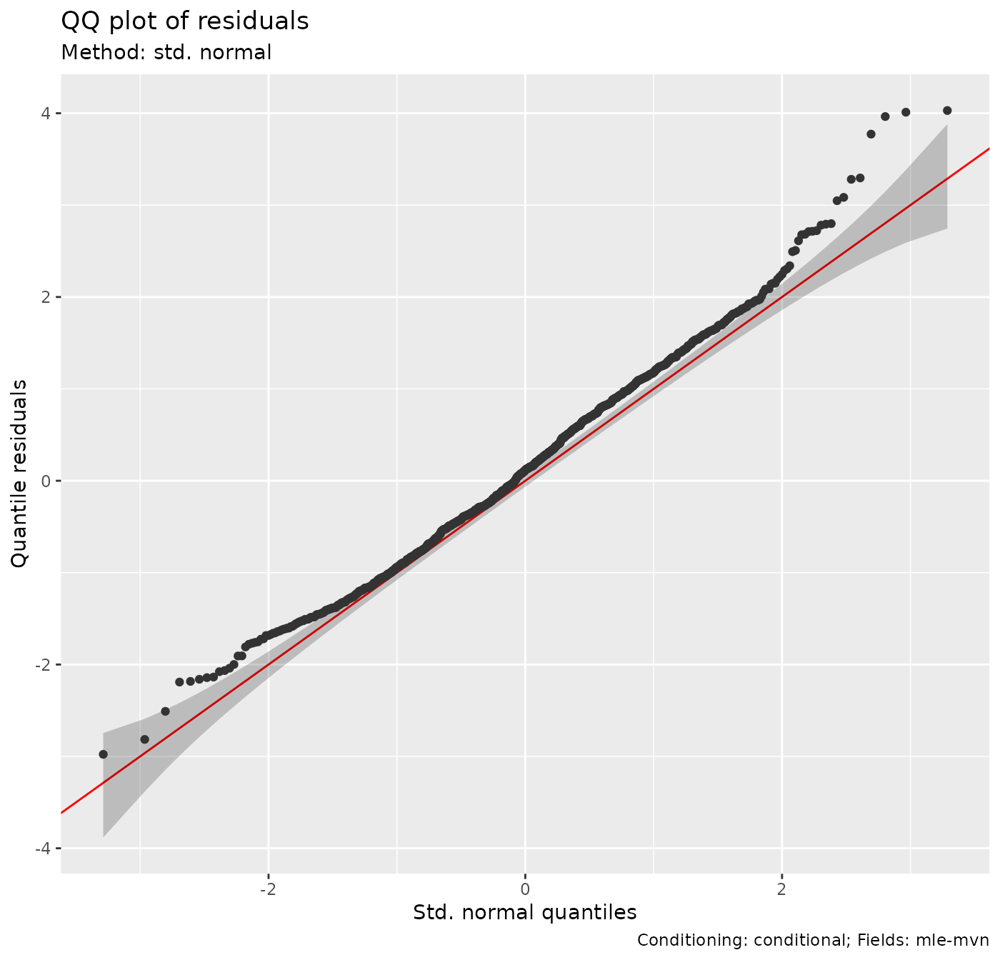
posterior_predictive_plot(cod_fit, component = "binomial",
n = 25, seed = 1405)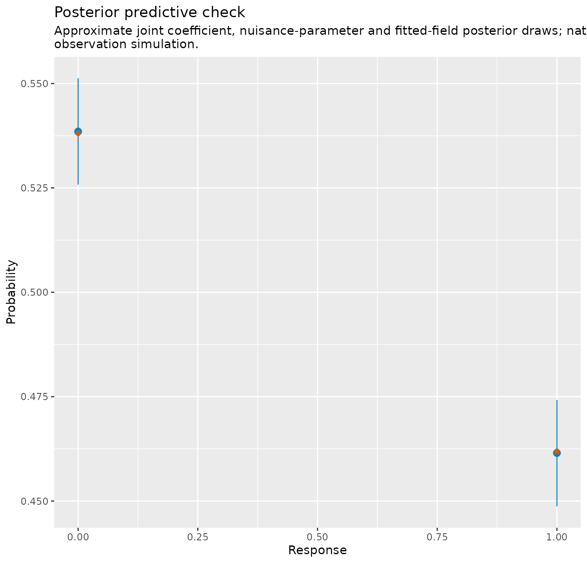
The occurrence plot compares the observed proportions at 0 and 1 with replicated proportions. Its intervals describe variation across posterior replicates, including parameter and fitted-field uncertainty. These are not the intervals for independent proportions from a binomial sample. A good aggregate proportion can conceal geographical mismatch, so retain the spatial residual map and inspect component maps if necessary.
Unlike residual references with coefficients fixed at their
estimates, posterior predictive checks draw fixed coefficients, nuisance
parameters, smooth coefficients and fields together from the approximate
joint posterior. Conditional checks draw uncertain fitted
fields; marginal checks replace these with new fields at each
parameter draw. field_method selects residual calculations
and is not an option for PPCs.
For the complete density distribution, smoothing a kernel density
curve over an exact-zero spike is hard to interpret. Raw public
posterior_samples() allow a targeted comparison of zero
frequency and a positive-tail summary:
cod_summaries <- function(x) {
c(proportion_zero = mean(x == 0), density_95th = unname(quantile(x, 0.95)))
}
observed_summary <- cod_summaries(cod$density)
conditional_draws <- posterior_samples(cod_fit, n = 25, seed = 1405)
marginal_draws <- posterior_samples(cod_fit, n = 25,
conditioning = "marginal", seed = 1405)
summarise_draws <- function(x, description) {
x |>
group_by(.draw) |>
summarise(proportion_zero = mean(.response == 0),
density_95th = quantile(.response, 0.95), .groups = "drop") |>
tidyr::pivot_longer(-.draw, names_to = "summary", values_to = "value") |>
mutate(check = description)
}
summary_draws <- bind_rows(
summarise_draws(conditional_draws, "Uncertain fitted fields"),
summarise_draws(marginal_draws, "New fields")
)
observed_table <- data.frame(summary = names(observed_summary),
observed = unname(observed_summary))
summary_draws |>
group_by(check, summary) |>
summarise(median = median(value), lower = quantile(value, 0.05),
upper = quantile(value, 0.95), .groups = "drop") |>
left_join(observed_table, by = "summary")
#> # A tibble: 4 × 6
#> check summary median lower upper observed
#> <chr> <chr> <dbl> <dbl> <dbl> <dbl>
#> 1 New fields density_95th 180. 149. 241. 157.
#> 2 New fields proportion_zero 0.494 0.412 0.614 0.538
#> 3 Uncertain fitted fields density_95th 158. 140. 181. 157.
#> 4 Uncertain fitted fields proportion_zero 0.538 0.526 0.551 0.538The conditional comparison asks whether new responses around the inferred survey fields reproduce these summaries. The marginal comparison asks whether new field realisations at the survey locations reproduce them. About 54% of observed tows are zero, and the observed 95th percentile is about 157 kg/km². Both fall within the displayed predictive ranges. This agrees with reproducing these aggregate summaries, while the conditional QQ plot still flags the more extreme positive tail. Passing a check of the 95th percentile does not establish that the largest catches are well represented. Wider marginal variation is scientifically plausible because these summaries change when a large part of the area happens to have high or low density. The displayed intervals are descriptive 90% predictive ranges from just 25 replicates. Increase the draw count before interpreting an apparent tail discrepancy. These summaries describe the sampling locations; an area-standardised biomass index requires predictions across the survey domain.
Applying the workflow to another survey
Retain the scientific unit of the response and its zeros when selecting a family. Consider whether encounter and positive-density processes need separate predictors, and justify temporal dependence from the survey schedule. Check convergence before interpreting partial effects. Use effect plots for formula contributions and full fitting-package predictions for maps and indices. Match each diagnostic to whether the scientific question concerns the observed fields or new fields, and examine spatial patterns alongside marginal distribution plots.
The support has deliberate limits. gratia does not supply partial
residual overlays or random-field effect plots for sdmTMB.
Formula-effect extraction does not cover dispersion formulas, other
multi-predictor families, threshold or nonlocal effects. It cannot use
mapped or profiled coefficients needed for extraction, unavailable
smooth metadata, or a covariance from a non-positive-definite Hessian.
unconditional = TRUE and frequentist = TRUE
are mgcv covariance choices and do not apply to these joint TMB
intervals. Use sdmTMB’s prediction and plotting methods for fields and
unsupported formula effects. If the covariance is unavailable,
investigate convergence before interpreting intervals. Diagnostic
families and additional limits are listed in
?diagnostic_support.